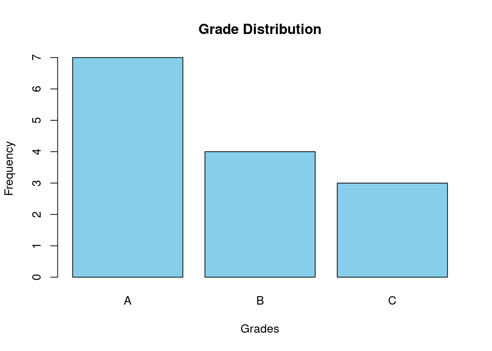
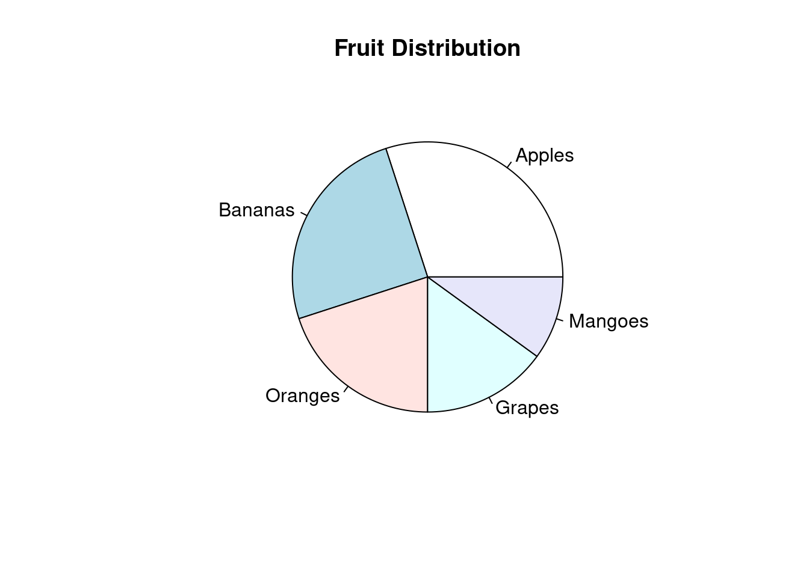

Chapter 2 Estadística descriptiva
2.1 Ejercicio 1
EJEMPLO
2.1.1 Análisis variables cualitativas
# Muestra
grades <- c("A", "B", "A", "C", "B", "A", "A", "C", "B", "A", "A", "A", "B", "C")
# Crear una tabla de frecuencias utilizando la función table()
freq_table <- table(grades)
freq_table## grades
## A B C
## 7 4 3# Creat gráfico de barras utilizando barplot()
barplot(freq_table, main = "Grade Distribution", xlab = "Grades", ylab = "Frequency", col = "skyblue")
# Muestra datos
fruits <- c("Apples", "Bananas", "Oranges", "Grapes", "Mangoes")
percentages <- c(30, 25, 20, 15, 10)
# Crear un gráfico circular utilizando pie()
pie(percentages, labels = fruits, main = "Fruit Distribution")
2.1.2 Análisis variable cuantitativas
# Datos de muestra (puntuaciones de exámenes)
scores <- c(85, 92, 88, 78, 95, 89, 84, 90, 86, 93)
# Calcula la puntuación media (promedio)
mean_score <- mean(scores)
mean_score## [1] 88## [1] 88.5## [1] 78## [1] 95## [1] 17## [1] 4.988877## 25%
## 85.25## 75%
## 91.5## 75%
## 6.25## [1] 24.88889# calcula el coeficiente de variación
sd_cal <- sd(scores)
media_cal <- mean(scores)
CV <- sd_cal/media_cal*100
CV## [1] 5.669178# Datos de muestra (puntuaciones de pruebas)
scores <- c(85, 92, 88, 78, 95, 89, 84, 90, 86, 93)
# Calcular la media de la muestra
sample_mean <- mean(scores)
# Calcular el tamaño de la muestra
sample_size <- length(scores)
# Calcular la desviación estándar de la muestra
sample_sd <- sd(scores)
# Calcular el erro estándar de la muestra (SEM)
SEM <- sample_sd / sqrt(sample_size)
cat("Media de la muestra:", sample_mean, "\n")## Media de la muestra: 88## Error estandard de la media (SEM): 1.577621(González et al., 2020; Kabacoff, 2015)